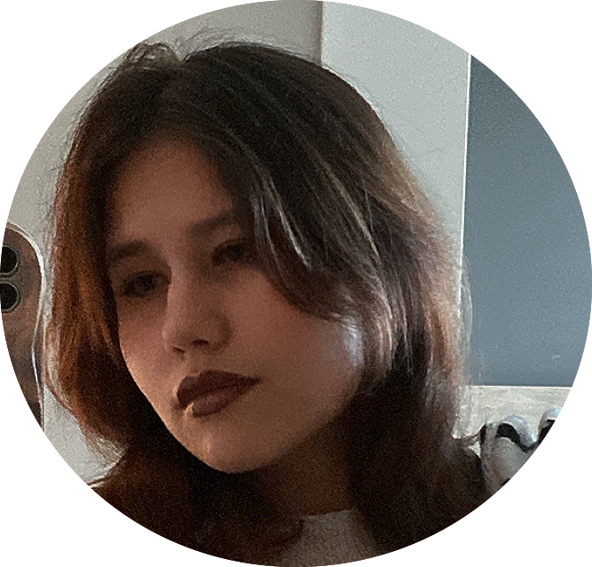

I have been working in IT more than two years, combining technical expertise with creativity and
strong communication skills. I started as a full-stack developer and worked in this role for a year
before transitioning into project management.
Beyond my main work, I explore web design, graphic design, and 3D modeling as personal interests. I am
always open to new creative projects and opportunities to bring fresh ideas to life.